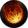

Метеорит
Открыть в интерактивной вики →
Описание
Благодаря силе своего разума, усиленного многоразовой Инкантацией, Маги Огня могут притягивать с орбиты огромный обломок скалы. Он воспламеняется в атмосфере и, окруженный пламенем, падает на противника, нанося большой урон. Есть шанс, что обломки, образовавшиеся в процессе, достанут и других врагов, но с меньшей силой.
Тип: массовая дальняя атака
Формула: 1.4 * мощь + 0.6 * знания
Оставшееся время Инкантации: мин. 3 хода
Тип: массовая дальняя атака
Формула: 1.4 * мощь + 0.6 * знания
Оставшееся время Инкантации: мин. 3 хода
Уровни навыка
| Уровень навыка | Требуемый уровень | Урон | Шанс попадания | Шанс на осколок | Мана |
|---|---|---|---|---|---|
| I | 26 | 126% | +5% | +22% | 45 |
| II | 27 | 140% | +5% | +24% | 50 |
| III | 28 | 154% | +6% | +26% | 54 |
| IV | 29 | 168% | +6% | +29% | 59 |
| V | 30 | 182% | +7% | +31% | 63 |
| VI | 31 | 196% | +7% | +34% | 68 |
| VII | 32 | 210% | +8% | +36% | 72 |
| I | 33 | 224% | +8% | +38% | 79 |
| II | 34 | 238% | +9% | +41% | 86 |
| III | 35 | 252% | +9% | +43% | 92 |
| IV | 36 | 266% | +10% | +46% | 99 |
| V | 37 | 280% | +10% | +48% | 106 |
| VI | 38 | 294% | +11% | +50% | 113 |
| VII | 39 | 308% | +11% | +53% | 119 |
| I | 40 | 322% | +12% | +55% | 128 |
| II | 41 | 336% | +12% | +58% | 137 |
| III | 42 | 350% | +13% | +60% | 146 |
| IV | 43 | 364% | +13% | +62% | 155 |
| V | 44 | 378% | +14% | +65% | 164 |
| VI | 45 | 392% | +14% | +67% | 173 |
| VII | 46 | 406% | +15% | +70% | 182 |